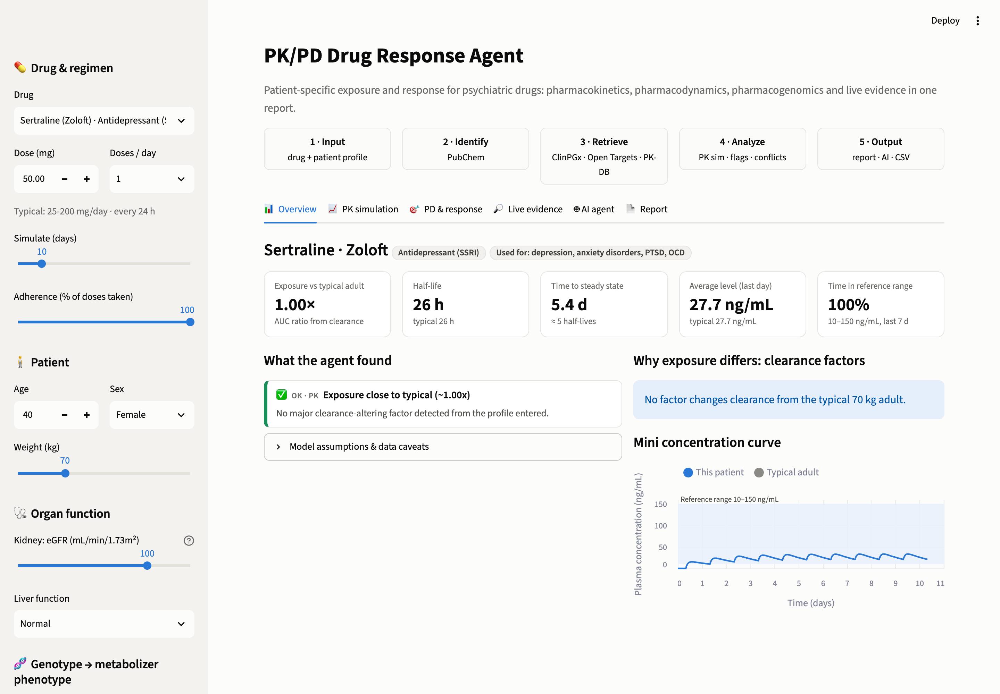
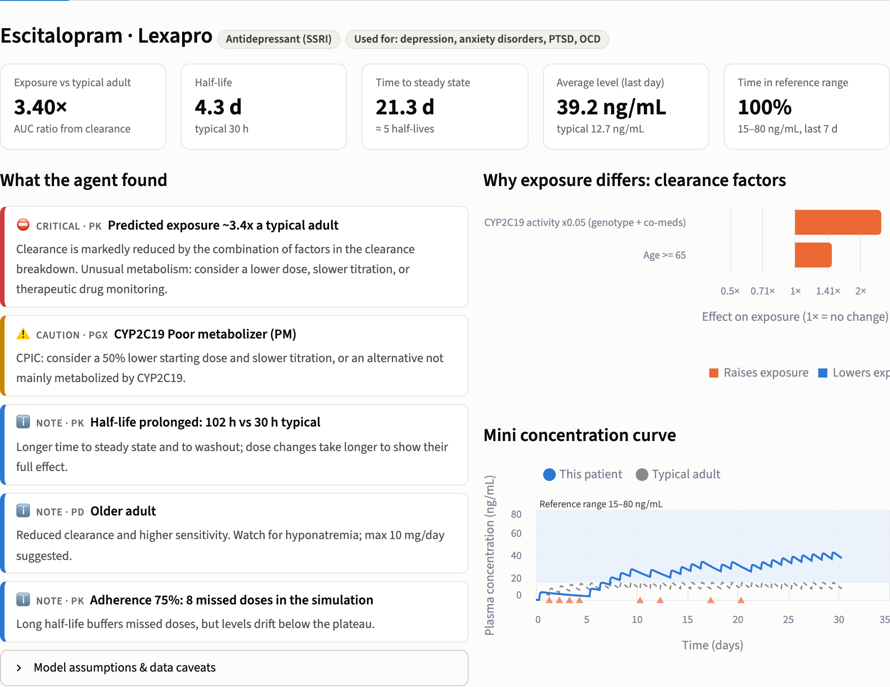
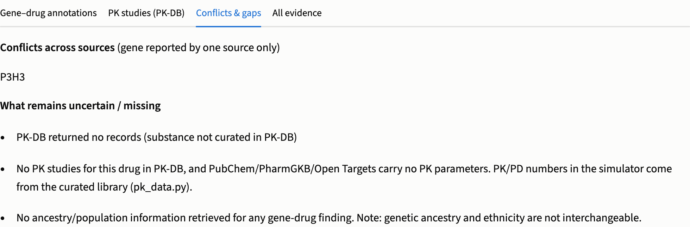
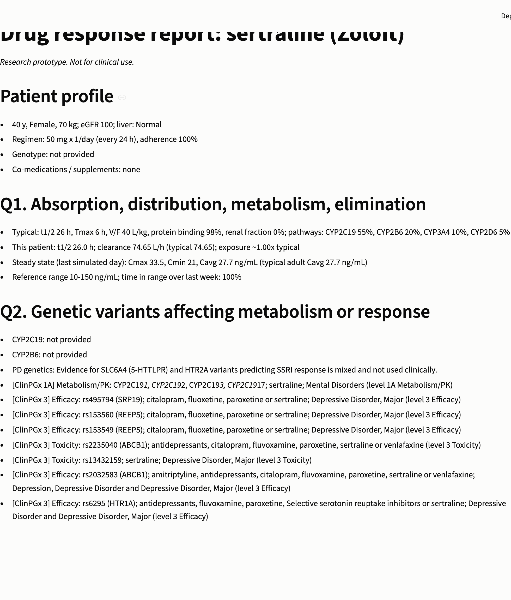

11/16/2026
Sarah & Aashwika
PK/PD Drug Response Agent: Demo
Where we left off (10/19)
- Prototype pulled gene–drug evidence from PubChem, PharmGKB, and Open Targets
- Plan: “start with these DBs, then add PK/PD evidence for one selected drug later”
- Known gaps: no PK/PD data, no ancestry info, no LLM step, PharmGKB access unchecked
What is new
- PK/PD layer added: the agent now simulates drug concentration over time for a specific patient
- Uses the PK factors from our notes: enzyme genotype → metabolizer phenotype, age, kidney/liver function,
drug–drug and drug–supplement interactions, dose, schedule, adherence
- Flags unusual metabolism (e.g. “exposure 3.4× a typical adult”)
- PD section added: mechanism and targets, time to effect vs. time to steady state, adverse effects,
and the patient characteristics per drug class from the reference article
- 8 psychiatric drugs covering the classes from our notes:
- Antidepressants (SSRIs): sertraline, escitalopram, citalopram, fluoxetine
- Antipsychotic: aripiprazole · Mood stabilizer: lithium · Anti-anxiety: alprazolam · Stimulant: methylphenidate
- Databases fixed and extended: PharmGKB moved to ClinPGx (old API no longer works); PK-DB added as a 4th live source
- New front end (Streamlit): patient profile sidebar + 6 tabs (Overview, PK simulation, PD & response,
Live evidence, AI agent, Report)
- Optional AI step (Claude): writes the narrative report and answers follow-up questions, but only explains
numbers the code already computed
Research questions → where the agent answers them
| Question (from 10/19) | How the agent answers it now |
|---|
| How does a drug get absorbed, distributed, metabolized, and eliminated? |
Concentration-time curve, half-life, time to steady state, Cmax / Cmin / AUC vs. a typical adult; enzyme pathways; PK-DB studies |
| Which genetic variants affect the drug’s metabolism or response? |
Metabolizer phenotype changes enzyme activity in the model; CPIC / FDA label guidance per phenotype; live ClinPGx + Open Targets annotations |
| What evidence exists for differences across demographic or ancestry groups? |
Reported in the “Q3” section of the report; live sources rarely return ancestry per finding, so the agent flags this as a gap
(ancestry ≠ ethnicity) |
| What factors could explain different responses or durations of action? |
“Clearance factors” chart: how much age, eGFR, liver function, co-medications, and adherence each change exposure |
Workflow Diagram (updated)
InputDrug + patient profile
→
RetrievePublic databases
→
SimulatePK engine
→
AnalyzeFlags, conflicts, gaps
→
OutputReport + AI + CSV
↑ feed Retrieve (databases) and Simulate (curated library) ↑
PubChemDrug identity
ClinPGxGene–drug
Open TargetsTargets, PGx
PK-DBPK studies (now live)
PK/PD libraryCurated parameters
green = live public database · teal = new PK/PD components · purple = agent steps
The agent takes a drug name and a patient profile and builds a report on how this person’s genetics, organ
function, and other medications may change their exposure to, and response from, that drug.
- Input: Pick a drug and fill in the patient profile in the sidebar (dose, schedule, adherence, age, sex,
weight, eGFR, liver function, metabolizer phenotype, co-medications/supplements, optional clinical context)
- Retrieve: Same as before (PubChem identity, gene–drug evidence, targets), plus PK-DB studies.
PharmGKB is now queried through ClinPGx
- Simulate (new): Patient-specific clearance → concentration-over-time curve, compared with a typical 70 kg
adult who is a normal metabolizer with full adherence
- Analyze: Rule-based flags (unusual exposure, CPIC guidance, interactions, phenoconversion, toxicity,
older adult, renal function, adherence), plus the earlier source conflicts and gaps
- Output: Dashboard + structured report organized by the research questions (markdown), evidence CSV,
concentration-time CSV, optional AI narrative/chat
Why PK-DB is only partly used: PK-DB returns study metadata publicly, but the actual parameter values (AUC,
half-life) come back empty without an account, and none of the SSRIs are in it. So the simulator uses a curated
table of literature/label values, and PK-DB is shown as supporting evidence when the drug is covered (e.g. alprazolam:
1 study, 56 individuals, 549 PK outputs).
How the PK model works
- One-compartment model with first-order oral absorption; each dose adds a curve and the curves are summed:
C(t) = Σdoses D·ka / (V·(ka − ke)) · ( e−ke(t−ti) − e−ka(t−ti) )
- Clearance is split into pathways (kidney + each enzyme). Each pathway is scaled by the patient’s factors:
CLpatient = CLtypical × [ frenal·(eGFR/100) + Σ fenzyme·activityenzyme + fother ] × liver × age × weight
- activity = genotype × co-medications. Example: CYP2D6 normal metabolizer (1.0) taking bupropion (×0.2)
→ activity 0.2 → behaves like a poor metabolizer. This is called phenoconversion, and it is one reason
“genotype alone cannot predict the complete PK profile” (from our 10/09 notes)
- Exposure ratio = CLtypical / CLpatient; half-life = 0.693·V / CL; steady state ≈ 5 half-lives
- Sanity check against literature (typical adult): sertraline 50 mg/day → ~28 ng/mL; escitalopram 10 mg → ~13 ng/mL;
aripiprazole 10 mg → ~112 ng/mL; lithium 900 mg/day → ~0.71 mmol/L, all in realistic ranges
Code: combining genotype and co-medications (pkpd.py)
# pathway activity = genotype x co-medications
for path in fm:
a = PHENOTYPE_ACTIVITY.get(p.phenotypes.get(path, "Normal metabolizer (NM)"), 1.0)
for m in p.comeds:
mult = INTERACTIONS.get(m, {}).get(path)
if mult is not None:
a *= mult
activity[path] = a
if not geno.startswith("Poor") and a <= 0.25 and fm[path] >= 0.3:
pheno.append(f"{path}: ... behaves like a poor metabolizer (phenoconversion).")
nonrenal = sum(fm[k] * activity[k] for k in fm) + f_other
total = fe * renal + nonrenal * hep * age_fac
cl_p = cl_ref * w_fac * total / total_ref
Code: one of the flag rules (pkpd.py → flags())
if fold_cl >= 2:
out.append(Flag(level="critical", area="PK",
title=f"Predicted exposure ~{fold_cl:.1f}x a typical adult",
detail="... Unusual metabolism: consider a lower dose, slower titration, "
"or therapeutic drug monitoring."))
for gene, guide in d.get("cpic", {}).items(): # CPIC / label guidance
ph = p.phenotypes.get(gene)
if ph and ph in guide:
out.append(Flag(level="warning", area="PGx", title=f"{gene} {ph}", detail=guide[ph]))
Demo: the app

Landing page (default: sertraline 50 mg daily, typical adult). The step bar mirrors the workflow diagram. The sidebar is the patient profile.
- Sidebar = “factors considered” from the 10/09 notes:
- Drug & regimen: dose, doses/day, days to simulate, adherence
- Patient: age, sex, weight
- Organ function: eGFR, liver (Child-Pugh)
- Genotype → metabolizer phenotype (only the genes that matter for the selected drug)
- Other medications & supplements
- Clinical context (symptoms/goals, previous responses, preferences, class characteristics like sleep or weight); used by the AI
- Everything recalculates instantly when an input changes
- With no genotype or co-medications, exposure = 1.00× and the only flag is “Exposure close to typical”
Case 1: Escitalopram, CYP2C19 poor metabolizer, age 70, 75% adherence

Overview tab. KPI tiles, flags (“What the agent found”), clearance factors, and a mini concentration curve.
- Exposure 3.4× a typical adult; half-life 102 h vs 30 h; steady state takes ~21 days instead of ~6
- CPIC guidance surfaced automatically: consider a 50% lower starting dose or an alternative not metabolized by CYP2C19
- Clearance factors: the CYP2C19 genotype is the biggest driver; age ≥ 65 adds to it
- 8 missed doses (orange triangles): long half-life buffers them, so levels dip but stay in range
Case 1 (cont.): PK simulation tab

Solid blue = this patient, dashed gray = typical adult. Shaded band = AGNP reference range (15–80 ng/mL). Hovering shows exact values.
- Steady-state table compares Cmax, trough, Cavg, AUC with the typical adult; model parameters show CL, V, half-life, absorption rate, accumulation
- Concentration-time data can be downloaded as CSV for further modeling
Case 3 (cont.): lithium accumulating above the reference range

The dashed typical-adult curve plateaus inside the range; this patient’s curve keeps climbing past it (half-life 65 h vs 24 h).
Live evidence tab (sertraline)

One click queries all 4 databases live. Status tiles show records per source; identifiers confirm the drug matches across sources.
- Sertraline: ClinPGx 22 clinical annotations (e.g. CYP2C19, level 1A), Open Targets 92 PGx annotations, PK-DB none
- Sub-tabs: gene–drug annotations (filter by source), PK-DB studies, conflicts & gaps, all evidence + CSV

Conflicts & gaps: genes reported by only one source, and what remains uncertain (PK-DB coverage, missing ancestry data).
Report tab + AI agent tab

Structured drug-response report (downloadable .md): patient profile, Q1–Q4, PD, flags, conflicts, uncertainty, sources.

AI agent tab. Without an API key it shows the rule-based summary; with a key, Claude writes the narrative and answers questions like “why is exposure higher?”